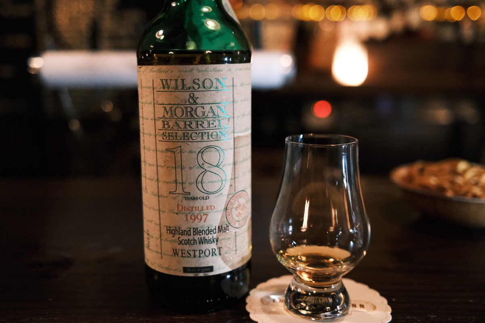

Westport 1997 Wilson and Morgan 18 years 58.5% (sherry butt)
Teaspooned Glenmorangie.
Colour Rust, deep gold.
Nose Huge dried fruits. Sherry bomb. Caramel and toffee, brown sugar, very sweet. Vanilla custard and cinnamon. A little hot. Dark chocolate, hazelnuts… with water, more hazelnuts, Nutella, marzipan.
Palate Spicy, sherry bomb. Really quite hot. Apricot delight, dates and figs, brown sugar. A little bit of mint, cinnamon, cloves, oak. Syrupy. With water, more oak, woody, a little earthy even. Grassy? Interesting. Candied almonds.
Finish Dried fruits. Is it possible to juice raisins? Raisin wine, thick. Christmas cake, panforte, etc. Long and hot. With water, very juicy, mulled wine.
Comments Juicy sherry bomb. 86/100.

Posted by Dominic on 15 Jun 2021